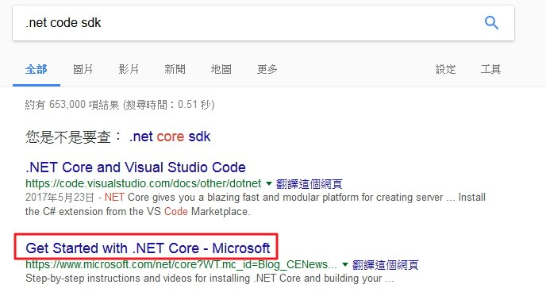

一、開發工具
工欲善其事，必先利其器
開發 c# 最常用的應該就是微軟出的 Visual Studio 整合開發環境（IDE），可用來開發Windows程式、網站、網路應用程式或網路服務等。
Visual Studio 2015 有以下幾個相關的版本:
- Visual Studio Community 個人或小型團隊
- Visual Studio Profession 專業版
- Visual Studio Enterprise 企業版
- Visual Studio Express 2015 editions 個人簡化版
- Visual Studio Test Professional with MSDN MSDN專業測試版
- Visual Studio Team Foundation Server 2015 雲端協同開發平台
上課以 Visual Studio Community 為主，下載位置如下:
軟體安裝
1.將下載 ISO 檔燒錄成光碟或直接按右鍵載入，並對 vs_community 點二下進行安裝
2.選擇預設，當然也可以選擇自訂，選擇要安裝的功能，按下一步
3.如果使用自訂方式，除了跨平台行動開發其它全部勾選
4.會列出剛才選擇的項目及需要使用的空間大小，並按安裝
5.安裝中，這個需要安裝一段時間可以放著去做其它事情

6.安裝完成後有些元件需要重開機，請按立即重新啟動
7.第一次使用時，會需要登入帳戶，如果沒有可以馬上註冊一個，註冊是免費的，當然也可以先略過等30天以後再來註冊
8.選擇開發環境，這裡我們使用一般，至於顏色就請您自行設定
9.終於完成可以開始使用囉
設定 ( 工具/選項 )
1.如果一開始所設定的顏色有問題，可以到「環境/一般」，修改色彩佈景主題
2.設定行號，可以到「文字編輯器/所有語言/一般」，將行號勾選

3.設定按 TAB 的方法，可以到「文字編輯器/所有語言/定位點」，選擇保留定位點
Visual Studio 安裝完畢後，在安裝目錄下會有使用說明手冊，路徑在 C:\Program Files (x86)\Microsoft Visual Studio 14.0\VC#\Specifications\1028 。
二、建立專案
Visual Studio 可開發主控台應用程式、Windows Form 應用程式、WPF 應用程式、ASP.NET Web應用程式、Cloud 雲端應用程式等相關應用程式和類別庫。
1.選擇檔案/新增/專案
2.選擇範本為 Visual C#，選擇主控台應用程式，並選擇存檔位置 D:\C# ，輸入檔案名稱後按確定
3.程式結構
using System; //引用System命名空間
using System.Collections.Generic; //定義泛型集合的介面和類別
using System.Linq; //語言整合查詢
using System.Text; //文字ASCII 和 Unicode 字元編碼的類別
using System.Threading.Tasks; //非同步作業
namespace Ex1 //專案命名空間名稱
{
class Program //Program類別
{
static void Main(string[] args) //主程式進入點
{
//在主控台印出Hello C#
Console.WriteLine("Hello C#");
Console.Read(); //暫停
}
}
}
4.註解
//代表單行註解
/* */代表多行註解
5.專案結構
| 相關檔案 | 說明 |
|---|---|
| Ex1.sln | 為方案檔 (存放在 Ex1 資料夾下)，副檔名為 sln |
| Ex1.csproj | 為專案檔 (存放在 Ex1\Ex1 資料夾下)，副檔名為 csproj |
| Program.cs | 為主控台預設的 C# 程式檔 (存放在 Ex1\Ex1 資料夾下)，副檔名為 cs |
| Ex1.exe | 為編譯後的執行檔 (存放在 Ex1\Ex1\bin\Debug 資料夾下)，副檔名為 exe |
6.ConSole 類別常用方法
| 類別方法 | 說明 |
|---|---|
| Write | 輸出不換行 |
| WriteLine | 輸出並換行 |
| Read | 讀取輸入字串中的第一個字，常用於暫停 |
| ReadLine | 讀取輸入訊息 |
| ReadKey | 按下鍵盤時，會觸發讀取及顯示，常用於按下任意鍵繼續 |
語法：
Console.WriteLine("字串");
Console.WriteLine("...{0}...{1}...",參數1,參數2..);
練習
string fname, lname;
Console.Write("請輸入姓氏:");
fname=Console.ReadLine();
Console.WriteLine("請輸入名字:");
lname = Console.ReadLine();
Console.WriteLine(fname + lname + "您好");
Console.Read();
三、命名方式
識別字是用來對程式中的一個方法、一個變數或其它使用者定義的項目給予名稱，方便程式在使用時可以識別。
- 要以英文字母大、小寫或底線開頭，也可以在後面加數字。例:id_no、idNo1。
- 英文字母的大小寫會視為不同的字元。例：NAME、Name、name 分別為三個不同的字。
- 命名最好要有意義並且和資料有相關連。例:salary_total、salaryTotal。
- C# 允許使用中文字當變數名稱，但是中文字在程式中易造成混淆，建議不要使用。
- 不允許關鍵字來當識別字，但是如果真的要使用可以在前面加上 @ 符號就可以當識別字使用。
關鍵字
| abstract | as | base | bool | break | byte | case |
|---|---|---|---|---|---|---|
| catch | char | checked | class | const | continue | decimal |
| default | delegate | do | double | else | enum | event |
| explicit | extern | false | finally | fixed | float | for |
| foreach | goto | if | implicit | in | int | interface |
| internal | is | lock | long | namespace | new | null |
| object | operator | out | override | params | private | protected |
| public | readonly | ref | return | sbyte | sealed | short |
| sizeof | stackalloc | static | string | struct | switch | this |
| throw | true | try | typeof | uint | virtual | volatile |
| void | while |
四、資料型別
程式設計的主要目的是用來處理資料，宣告成適合的資料型別，當程式進行編譯時才能依據這些型別在記憶體中配置記憶體空間來存放資料。
| 資料型別 | 名稱 | .NET Framework | 大小 | 範圍 | 說明 |
|---|---|---|---|---|---|
| bool | 布林 | System.Boolean | 1Byte | true 或 false | |
| byte | 位元 | System.Byte | 1Byte | 0~255 | |
| sbyte | 位元 | System.Sbyte | 1Byte | -128~127 | |
| short | 短整數 | System.Int16 | 2Bytes | -32,768~32,767 | |
| int | 整數 | System.Int32 | 4Bytes | -2的31次方~2的31次方-1 | |
| long | 長整數 | System.Int64 | 8Bytes | -2的63次方~2的63次方-1 | |
| ushort | 無正負號短整數 | System.Uint16 | 2Bytes | 0~65,535 | |
| uint | 無正負號整數 | System.Uint32 | 4Bytes | 0~4,294,967,295 | |
| ulong | 無正負號長整數 | System.Uint64 | 8Bytes | 0~1.8446744e+19 | |
| float | 單精浮點數 | System.Single | 4Bytes | -3.4E+38~3.4E+38 | 末尾要加上f |
| decimal | 貨幣 | System.Decimal | 16Bytes | -7.9E+28~-7.9E+28 | |
| char | 字元 | System.Char | 2Byte | 0~65,535 | 以單引號包圍字元 |
| string | 字串 | System.String | 以雙引號包圍字串 | ||
| object | 物件 | System.Object |
五、變數宣告
變數在程式執行過程中值會改變，而值不變的稱為常數。不管是變數或常數在使用之前都必須先宣告，宣告的目的是賦予變數或常數一個資料型別及名稱。
語法:
資料型別 變數名稱;
資料型別 變數名稱1,變數名稱2......變數名稱N;
資料型別 變數名稱 = 值;
練習
bool b1 = true;
bool b2 = false;
Console.WriteLine("b1="+b1+",b2="+b2);
byte by1 = 100;
sbyte by2 = -50;
Console.WriteLine("by1=" + by1 + ",by2=" + by2);
short in1 = 30000;
int in2 = 3000000;
int in3 = 300000000;
ushort in4 = 60000;
uint in5 = 123456789;
ulong in6 = 123456789123456789;
Console.WriteLine("in1=" + in1 + ",in2=" + in2 + ",in3=" + in3);
Console.WriteLine("in4=" + in4 + ",in5=" + in5 + ",in6=" + in6);
float f1 = 3.543231f;
double d1 = 123.3453412312;
Console.WriteLine("f1=" + f1 + ",d1=" + d1);
decimal dc = 123345123;
Console.WriteLine("dc=" + dc );
char ch1 = 'A';
char ch2 = (char)65; //十進位ASCII
char ch3 = '\x41'; //十六進位ASCII
char ch4 = '\u0041'; //Unicode
Console.WriteLine("ch1=" + ch1 + ",ch2=" + ch2 + ",ch3=" + ch3 + ",ch4=" + ch4);
string str1 = "蜘蛛人";
string str2 = "返校日";
string str3 = str1 + str2;
Console.WriteLine("str1=" + str1 + ",str2=" + str2);
Console.WriteLine("str3=" + str3);
object o1 = 10;
object o2 = 'S';
object o3 = "神鬼傳奇";
object o4 = true;
Console.WriteLine("o1=" + o1 + ",o2=" + o2 + ",o3=" + o3 + ",o4=" + o4);
練習-宣告2個整數變數 n1,n2 並設定初始值分別為 10與20；要求將2個變數進行交換並輸出結果(不使用第3個變數如何交換?)
常數
程式在執行過程中有些資料至程式執行結束都始終不變，而且會在程式中不斷出現，這個時候就可以用常數來宣告，而常數名稱通常用大寫字母，宣告的變數值是不能修改的。
語法：
const 資料型別 常數名稱 = 常數值;
六、運算子
運算子是用來指定資做何種運算。運算子區分為如下幾種:
- 算術運算子
- 遞增遞減運算子
- 關係運算子
- 邏輯運算子
- 位元運算子
- 位移運算子
- 複合指定運算子
1.算術運算子
用來執行一般的數學運算
| 運算子符號 | 運算子 | 運算式 |
|---|---|---|
| + | 加 | a+b |
| - | 減 | a-b |
| * | 乘 | a*b |
| / | 除 | a/b |
| % | 餘數 | a%b |
練習
int a = 10, b = 3;
Console.WriteLine("a+b=" + (a + b));
Console.WriteLine("a-b=" + (a - b));
Console.WriteLine("a*b=" + (a * b));
Console.WriteLine("a/b=" + (a / b));
Console.WriteLine("a%b=" + (a % b));
2.遞增遞減運算子
放在變數前表示一開始就先計算，放在變數後表示事後再做計算。
| 運算式 | 類型 | 運算方式 |
|---|---|---|
| b=++a | 前置型 | a=a+1,b=a |
| b=a++ | 後置型 | b=a,a=a+1 |
| b=--a | 前置型 | a=a-1,b=a |
| b=a-- | 後置型 | b=a,a=a-1 |
練習
int x, y = 10;
x = ++y;//y=y+1,x=y
Console.WriteLine("x=" + x + ",y=" + y);
x = y++;//x=y,y=y+1
Console.WriteLine("x=" + x + ",y=" + y);
x = --y;//y=y-1,x=y
Console.WriteLine("x=" + x + ",y=" + y);
x = y--;//x=y,y=y-1
Console.WriteLine("x=" + x + ",y=" + y);
3.關係運算子
關係運算子是用來比較數字或字串大小，其結果會傳回布林值的 true (真) 或 false (假)。
| 關係運算子 | 功能 | 用法 |
|---|---|---|
| == | 等於 | A==B |
| != | 不等於 | A!=B |
| > | 大於 | A>B |
| < | 小於 | A<B |
| >= | 大於等於 | A>=B |
| <= | 小於等於 | A<=B |
練習
int n1 = 5, n2 = 8, n3 = 5;
Console.WriteLine("n1=n2:" + (n1 == n2));
Console.WriteLine("n1=n3:" + (n1 == n3));
Console.WriteLine("n1!=n2:" + (n1 != n2));
Console.WriteLine("n1!=n3:" + (n1 != n3));
Console.WriteLine("n1>n2:" + (n1 > n2));
Console.WriteLine("n1<n2:" + (n1 < n2));
Console.WriteLine("n1>=n2:" + (n1 >= n2));
Console.WriteLine("n1<=n2:" + (n1 <= n2));
4.邏輯運算子
邏輯運算子兩邊的運算元都是由布林值所構成，一般都是用來連接多個關係運算式，主要用來測試較複雜的條件，而邏輯運算式的結果也只有 true (真)或 false (假)。
| 邏輯運算子 | 功能 | 用法 | 說明 |
|---|---|---|---|
| && | AND (且) | A && B | 只有 A 與 B 都為真，結果才是真 |
| ll | OR (或) | A ll B | A 與 B 其中一個為真，結果就是真 |
| ! | NOT (相反) | !A | 如果 A 為真，結果就為假 |
練習
n1 = 10; n2 = 5; n3 = 3;
Console.WriteLine("n1>n2 && n1<n3=" + (n1 > n2 && n1 < n3));
Console.WriteLine("n1>n2 || n1<n3=" + (n1 > n2 || n1 < n3));
Console.WriteLine("n1>n2)" + (n1 > n2));
Console.WriteLine("!(n1>n2)=" + !(n1 > n2));
5.位元運算子
先將運算元轉換成 0 或 1 的二進位制，再將二進位做布林運算。
二進位運算方式
- & (AND):對應的二個字元都 1 時，運算結果才是 1，否則為 0。
- l (OR):對應的二個字元只要任一字元為 1 時，運算結果就是 1。

- ^ (XOR):對應的二個字元只有任一字元為 1 時，運算結果才是 1，如果同時為 1 或 0 時，結果即為 0。
- ~ (NOT):取 1 的補數，也就是 0 與 1 互換，如果第 1 個數字如果為 1 則代表負值。
練習
int m1 = 12, m2 = 38;
Console.WriteLine("m1 & m2 =" + (m1 & m2));
Console.WriteLine("m1 | m2 =" + (m1 | m2));
Console.WriteLine("m1 ^ m2 =" + (m1 ^ m2));
Console.WriteLine("~ m1 =" + ~m1);
Console.WriteLine("~ m2 =" + ~m2);
6.位移運算子
可以用來做數值運算，首先將指定的運算元轉換成二進位，接著再使用 << 或 >> 來進行移動運算。
| 位移運算子 | 功能 | 用法 | 說明 |
|---|---|---|---|
| << | 左移 | A << B | 將 A 往左位移 B 位元，並在最右邊補 0 |
| >> | 右移 | A >> B | 將 A 往右位移 B 位元，並在最左邊補 0 |
練習
int c = 12;
Console.WriteLine("c << 2 =" + (c << 2));
Console.WriteLine("c >> 3 =" + (c >> 3));
7.複合指定運算子
需要指定某個變數的值或將某個變數 (運算式) 的結果指定給某個變數。
| 複合指定運算子 | 功能 | 用法 |
|---|---|---|
| = | 指定 | A = 5 |
| += | 相加後再指定 | A += 5 |
| -= | 相減後再指定 | A -= 3 |
| *= | 相乘後再指定 | A *= 2 |
| /= | 相除後再指定 | A /= 4 |
| %= | 相除後的餘數再指定 | A %= 6 |
| &= | 做 AND 運算後再指定 | A &= 3 |
| l= | 做 OR 運算後再指定 | A l= 8 |
| ^= | 做 XOR 運算後再指定 | A ^= 7 |
| <<= | 左移指定運算 | A <<= 2 |
| >>= | 右移指定運算 | A >>= 3 |
練習
int num = 10;
num += 8;
Console.WriteLine("num += 8 :" + num);
num -= 5;
Console.WriteLine("num -= 5 :" + num);
num *= 9;
Console.WriteLine("num *= 9 :" + num);
num /= 2;
Console.WriteLine("num /= 2 :" + num);
num %= 15;
Console.WriteLine("num %= 15 :" + num);
num &= 10;
Console.WriteLine("num &= 10 :" + num);
num |= 8;
Console.WriteLine("num |= 8 :" + num);
num ^= 35;
Console.WriteLine("num ^= 35 :" + num);
num <<= 3;
Console.WriteLine("num <<= 3 :" + num);
num >>= 2;
Console.WriteLine("num >>= 2 :" + num);
七、格式化輸出
| 字元 | 功能 |
|---|---|
| C 或 c | 以貨幣方式顯示資料，以 $ 開頭 |
| Dn 或 dn | 以指定 n 位數顯示十進位資料，空白處補 0 |
| E 或 e | 以指數 (科學記號) 方式顯示資料 |
| Fn 或 fn | 以小數有 n 位來顯示資料 |
| G 或 g | 以一般格式顯示 |
| N 或 n | 使用千位符號但不包含 $ 符號，若為 N1 表示保留小數至第一位 |
| X 或 x | 資料以十六進制顯示 |
練習
int n1 = 123456, n2 = -123456;
double n3 = 1234.567, n4 = -1234.567;
//0與1代表順序;c代表貨幣 後方數字代表小數位數
Console.WriteLine("n3={0:c} n4={1:c3}", n3, n4);
Console.WriteLine("n1={0:d9} n2={1:d} n2={2:d7}",n1,n2,n2);//D代表十進制
Console.WriteLine("n3={0:e} n4={1:e3}",n3,n4);//E代表科學記號
Console.WriteLine("n3={0:f1} n4={1:f}", n3, n4);//F代表小數位數
Console.WriteLine("n3={0:g2} n4={1:g}",n3,n4);//G代表一般格式
Console.WriteLine("n3={0:n4} n4={1:n}",n3,n4);//N代表千分位符號不含$
Console.WriteLine("n1={0:x} n2={1:x}", n1, n2);//X代表十六進制
八、自訂輸出格式
要使用ToString()方法來完成自訂輸出格式
| 格式字元 | 作用 | 說明 |
|---|---|---|
| 0 | 零值 | 若顯示的數值位數比設定格式小未用到的位數會以 0 取代 |
| # | 數字 | 若顯示的數值位數比設定格式小未用到的位數會以空白取代 |
| . | 小數點 | 顯示小數點 |
| , | 千位分隔符號 | 數值中每三位加上一個千位分隔符號 |
| % | 百分比 | 使用%符號並將數值除以100顯示 |
| E | 科學記號 | 使用科學記號方式來顯示 |
| \ | 逸出字元 | 在逸出字元後方再加上不用字元會有不同的使用意義 |
| '' "" | 單引號或雙引號 | 會將括號內字串直接顯示出來 |
練習
double num1 = 912345678;
Console.WriteLine("電話:" + num1.ToString("0###-###-###"));
Console.WriteLine("數字:" + num1.ToString("$#,##0"));
C# 預設讀取文字必須存為字串，如果要使用其它格式可以使用 Convert 來進行轉換
| 轉換方式 | 作用 |
|---|---|
| Convert.ToDecimal | 轉換成貨幣型態 |
| Convert.ToSingle | 轉換成 float 型態 |
| Convert.ToDouble | 轉換成 double 型態 |
| Convert.ToBoolean | 轉換成 boolean 型態 |
| Convert.ToByte | 轉換成 byte 型態 |
| Convert.ToInt16 | 轉換成 short 型態 |
| Convert.ToInt32 | 轉換成 int 型態 |
| Convert.ToInt64 | 轉換成 long 型態 |
| Convert.ToChar | 轉換成 char 型態 |
練習
Console.Write("byte:");
byte x1 = Convert.ToByte(Console.ReadLine());
Console.Write("short:");
short x2 = Convert.ToInt16(Console.ReadLine());
Console.Write("int:");
int x3 = Convert.ToInt32(Console.ReadLine());
Console.Write("long:");
long x4 = Convert.ToInt64(Console.ReadLine());
Console.Write("float:");
float x5 = Convert.ToSingle(Console.ReadLine());
Console.Write("double:");
double x6 = Convert.ToDouble(Console.ReadLine());
Console.Write("decimal:");
decimal x7 = Convert.ToDecimal(Console.ReadLine());
Console.Write("char:");
char x8 = Convert.ToChar(Console.ReadLine());
Console.Write("bool:");
bool x9 = Convert.ToBoolean(Console.ReadLine());
Console.WriteLine("byte:{0} short:{1} int:{2} long:{3}",x1,x2,x3,x4);
Console.WriteLine("float:{0} double:{1} decimal:{2} char:{3} bool:{4}",x5,x6,x7,x8,x9);
Console.ReadKey();
九、跳脫字元
在輸出時會一些符號會無法輸出這時就必須使用跳脫字元來顯示。
| 跳脫字元 | 說明 |
|---|---|
| \' | 顯示單引號 |
| \" | 顯示雙引號 |
| \\ | 顯示倒斜線 |
| \a | 警告聲(嗶) |
| \b | 退一格 (Backspace) |
| \n | 換行 (Enter) |
| \r | 游標移到該行最前方 |
| \t | 跳位 (TAB) |
| \uddd | 使用Unicode字元 |
| \v | 插入垂直跳格到字串中 |
| \0 | 空字元 |
練習
Console.WriteLine("\"變形金鋼\":\b\t\'最終\\騎士\'\a\r");
十、資料型態轉換
在做資料運算時，有時候必須將資料進入轉型才有辦法得到正確的結果。轉型的方法有二種如下:
- 自動轉型
- 強制轉型
- Parse方法
自動轉型:
由編譯器判斷應轉換成何種資料型態，而轉換的過程會以範圍大者為優先對象。
練習
int a = 10;
float b = 3.52f;
double c;
c = a + b;
Console.WriteLine("a=" + a + ",b=" + b + ",c=" + c);
Console.WriteLine("a={0},b={1},c={2:f2}", a, b, c);
強制轉型:
由使用者強制轉換資料型態，轉換型態的小括號不能省略
語法：
變數 = (資料型別)變數或運算式;
練習
int g1 = 59, g2 = 77, g3 = 69, sum;
sum = g1 + g2 + g3;
Console.WriteLine("總分:" + sum + ",平均:" + (float)sum / 3);
Parse方法:
使用者由鍵盤輸入的資料強制轉成指定型態
語法：
資料型別 變數名稱 = 資料型別.Parse(字串);
練習
Console.Write("請輸入年齡：");
int age = int.Parse(Console.ReadLine());
Console.WriteLine("年齡：{0}",);
十一、列舉資料型別
列舉資料型別是常數集合，程式在執行期間是不能修改其定義的值。
(注意:列舉資枓型別定義時不能寫在main裡面)
語法:
[存取修飾詞] enum 列舉名稱 : 資料型別 {
列舉成員1 = 初始值1,
列舉成員2 = 初始值2,
.....
列舉成員N = 初始值N
}
練習
//列舉資料型別
public enum weekday : int
{
Mon=1,
Tus=2,
Wed=3,
Thu=4,
Fri=5,
Sat=6,
Sun=7
};
static void Main(string[] args)
{
//列舉資料型別
Console.WriteLine("星期三的數字為:{0}", (int)weekday.Wed);
Console.WriteLine("數字5為:{0}", weekday.Fri);
Console.Read();
}
十二、結構資料型別
程式中的一個變數代表一個資料型別的資料，而陣列是由一群性質相同資料型別的集合。至於結構是將數個彼此相關但資料型別不同的變數，集合在一個結構名稱之下構成一個新的結構資料型別。
語法:
[存取修飾詞] struct 結構名稱 {
[存取修飾詞] 資料型別 結構成員1;
[存取修飾詞] 資料型別 結構成員2;
.......
[存取修飾詞] 資料型別 結構成員N;
}
練習
public struct product
{
public string no, name;
public int price;
}
static void Main(string[] args)
{
product game;
game.no = "f01";
game.name = "xbox";
game.price = 10000;
product cookie;
Console.Write("請輸入編號:");
cookie.no = Console.ReadLine();
Console.Write("請輸入名稱:");
cookie.name = Console.ReadLine();
Console.Write("請輸入價格:");
cookie.price = int.Parse(Console.ReadLine());
Console.WriteLine("產品編號:{0}\n產品名稱:{1}\n價格:{2}", game.no, game.name, game.price);
Console.WriteLine("產品編號:{0}\n產品名稱:{1}\n價格:{2}", cookie.no, cookie.name, cookie.price);
Console.Read();
}
十三、條件判斷
1.IF條件判斷
當判斷內容為一個區間範圍時
● IF 單條件判斷
語法:
if ( 條件 ) {
條件成立時執行;
}
● IF 雙條件判斷
語法:
if ( 條件 ) {
條件成立時執行;
} else {
條件不成立時執行;
}
● IF 多條件判斷
語法:
if ( 條件1 ) {
條件成立時執行;
} else if ( 條件2 ) {
條件成立時執行;
} else if ( 條件3 ) {
........
} else {
條件不成立時執行;
}
練習
Console.Write("請輸入分數:");
int grade=int.Parse(Console.ReadLine());
if (grade < 60) { Console.WriteLine("不及格"); }
if (grade >= 60) { Console.WriteLine("及格"); }
if (grade < 60) { Console.WriteLine("不及格"); } else { Console.WriteLine("及格"); }
if (grade >= 90){Console.WriteLine("優");
}else if(grade>=80 && grade < 90){ Console.WriteLine("甲");
}else if (grade >= 70) { Console.WriteLine("乙");
}else if (grade >= 60) { Console.WriteLine("丙");
}else { Console.WriteLine("丁"); }
Console.Read();
練習題:輸入1個數字，判斷1到該數字中間值為何。
2.switch
當判斷內容為固定選擇項目時
語法:
switch(參數){
case 值1:
執行程式;
break;
case 值2:
執行程式;
break;
......
default:
執行程式;
break;
}
練習
Console.Write("旅遊地點選擇\n1.日本\n2.韓國\n3.東南亞\n請選擇:");
int select = int.Parse(Console.ReadLine());
switch (select)
{
case 1:
Console.WriteLine("選擇地點為日本");
break;
case 2:
Console.WriteLine("選擇地點為韓國");
break;
case 3:
Console.WriteLine("選擇地點為東南亞");
break;
default:
Console.WriteLine("無此選項");
break;
}
Console.Read();
練習題:輸入字母判斷母音與子音。
3.三元運算子
相當於 if....else.....
語法:
變數 = 條件 ? 成立 : 不成立 ;
練習
Console.Write("請輸入年齡:");
int age = int.Parse(Console.ReadLine());
string ans=age >= 18 ? "成年" : "未成年";
Console.WriteLine(ans);
Console.Read();
練習題:輸入二個數字並顯示最大值。
十四、迴圈
1.單迴圈
● for迴圈
語法:
for(初始值;結束值;增減值){
執行項目;
}
練習
int sum=0;
for (int i = 1; i <= 10; i++)
{
sum += i;
Console.Write(i + "+");
}
Console.WriteLine("\b=" + sum);
Console.Read();
● while迴圈
語法:
初始值;
while(結束值){
執行項目;
增減值;
}
練習
int sum = 0;
int i = 1;
while (i <= 10)
{
sum += i;
Console.Write(i + "+");
i++;
}
Console.WriteLine("\b=" + sum);
Console.Read();
● do..while迴圈
語法:
初始值;
do{
執行項目;
增減值;
}while(結束值);
練習
int sum = 0;
int i = 1;
do
{
sum += i;
Console.Write(i + "+");
i++;
} while (i <= 10);
Console.WriteLine("\b=" + sum);
Console.Read();
練習題:請分別使用for、while、do..while迴圈計算3的5次方並將每個次方計算的值印出。
2.巢狀迴圈
● for迴圈
語法:
for(初始值;結束值;增減值){
for(初始值;結束值;增減值){
執行項目;
}
執行項目;
}
練習
for(int i = 1; i <= 9; i++)
{
for(int j = 1; j <= 9; j++)
{
Console.Write(j + "*" + i + "=" + (i * j) + "\t");
}
Console.WriteLine();
}
Console.Read();
● while迴圈
語法:
初始值;
while(結束值){
初始值;
while(結束值){
執行項目;
增減值;
}
執行項目;
增減值;
}
練習
int i = 1;
while (i <= 9)
{
int j = 1;
while (j <= 9)
{
Console.Write(j + "*" + i + "=" + (i * j) + "\t");
j++;
}
i++;
Console.WriteLine();
}
Console.Read();
● do..while迴圈
語法:
初始值;
do{
初始值;
do{
執行項目;
增減值;
}while(結束值);
執行項目;
增減值;
}while(結束值);
練習
int i = 1;
do
{
int j = 1;
do
{
Console.Write(j + "*" + i + "=" + (i * j) + "\t");
j++;
} while (j <= 9);
i++;
Console.WriteLine();
} while (i <= 9);
Console.Read();
3.無窮迴圈
● for迴圈
語法:
for(;;){
執行項目;
}
練習
int x = 1;
for (;;)
{
if (x > 8)
break;
Console.Write(x + ",");
x++;
}
Console.WriteLine("\b ");
● while迴圈
語法:
while(true){
執行項目;
}
練習
int sum=0,i=1;
while (true)
{
if (sum > 100)
break;
Console.Write(sum + ",");
sum += i;
i++;
}
Console.WriteLine("\b ");
Console.Read();
● do..while迴圈
語法:
do{
執行項目;
}while(true);
練習
int i = 1;
do
{
if (i % 2 == 0)
Console.Write(i + ",");
else if (i > 100)
break;
i++;
} while (true);
Console.WriteLine("\b ");
Console.Read();
十五、中斷與繼續
break表示程式執行到特定條件時會中斷迴圈。
continue表示程式執行到特定條件時會略過目前的條件繼續下個條件運行。
練習
char ch;
do
{
Console.Write("請輸入第1個數字:");
int x = int.Parse(Console.ReadLine());
Console.Write("請輸入第2個數字:");
int y = int.Parse(Console.ReadLine());
int sum = x + y;
do
{
Console.Write(x + "+" + y + "=");
int ans = int.Parse(Console.ReadLine());
if (ans == sum)
{
Console.WriteLine("答對了");
break;
}else
{
Console.WriteLine("答錯了");
continue;
}
} while (true);
Console.Write("是否繼續(Y/N)?");
ch = char.Parse(Console.ReadLine());
} while (ch == 'y' || ch == 'Y');
Console.Read();
十六、陣列
程式中的變數只能存放一個資料，當程式中需要使用大量且同性質的資料時，就得為大量變數的命名而煩惱。
陣列是由多個相同資料型別的變數在記憶體中前後連續串在一起。
● 一維陣列
語法
1.資料型別 [ ] 陣列名稱;
陣列名稱 = new 資料型別 [ 陣列大小 ];
2.資料型別 [ ] 陣列名稱 = new 資料型別 [ 陣列大小 ];
3.資料型別 [ ] 陣列名稱 = new 資料型別 [ 陣列大小 ] { 初始值1,...初始值N };
練習
int[] arr1;
arr1 = new int[5];
int[] arr2 = new int[6] { 1, 2, 3, 4, 5, 6 };
arr1[0] = 30;
arr1[1] = arr2[0];
Console.WriteLine("arr1[0]=" + arr1[0]);
for(int i = 0; i < arr2.Length; i++)
{
Console.WriteLine("arr2[{0}]={1}", i, arr2[i]);
}
Console.Read();
● 二維陣列
語法
1.資料型別 [ , ] 陣列名稱;
陣列名稱 = new 資料型別 [ 第一維陣列大小 , 第二維陣列大小 ];
2.資料型別 [ , ] 陣列名稱 = new 資料型別 [ 第一維陣列大小 , 第二維陣列大小 ];
3.資料型別 [ , ] 陣列名稱 = new 資料型別 [ 第一維陣列大小 , 第二維陣列大小 ] { { 初始值1,...初始值N } , .... , { 初始值1,...初始值N } };
練習
int[,] arr1;
arr1 = new int[3, 5];
int[,] arr2 = new int[2, 4];
int[,] arr3 = new int[3, 2] { { 1, 2 }, { 3, 4 }, { 5, 6 } };
arr1[0, 0] = 10;
arr2[1, 3] = arr3[1, 1];
Console.WriteLine("arr1[0,0]=" + arr1[0,0]);
Console.WriteLine("arr2[1,3]=" + arr2[1,3]);
for (int i = 0; i < arr3.GetLength(0); i++)
{
for(int j = 0; j < arr3.GetLength(1); j++)
{
Console.WriteLine("arr3[{0},{1}]={2}", i, j, arr3[i, j]);
}
}
Console.Read();
● 陣列常用的屬性與方法
int [ ] a1 = new int [ 3 ] ;
int [ , ] a2 = new int [ 3 , 4 ] ;
| 陣列物件的成員 | 功能 |
|---|---|
| Length | 取得指定陣列內所有陣列元素的總數。 a1.Length 回傳 3 ，a2.Length 回傳 12 |
| Rank | 取得指定陣列維度的數目，一維陣列回傳 1 ，二維陣列回傳 2。 a1.Rank 回傳 1 ，a2.Rank 回傳2 |
| IsReadOnly | 回傳指定陣列是否唯讀。 a1.IsReadOnly 回傳 false |
| GetUpperBound | 取得指定陣列中某一維度上限。 a1.GetUpperBound(0) 一維上限，回傳 2 a2.GetUpperBound(1) 二維上限，回傳 3 |
| GetLowerBound | 取得指定陣列中某一維度的下限。(陣列的下限都是由 0 開始) |
| GetLength | 取得指定陣列中某一維度的陣列元素總數。 a1.GetLength(0) 回傳 3 ，a2.GetLength(1) 回傳 4 |
| CreateInstance | 建立指定陣列資料型別和大小的一維陣列。 Array a1 = Array.CreateInstace(typeof(Int32),5); Array a2 = Array.CreateInstace(typeof(Int32),2,3); |
| SetValue | 設定一維、二維..陣列中陣列元素的值。 a1.SetValue(值,陣列位置); a1.SetValue(10,2); |
| GetValue | 取得一維、二維..陣列中位於指位置的值。 a1.GetValue(2); a2.GetValue(0,1); |
● foreach
與for的功能一樣，兩者差異在 foreach 不用給予迴圈正確的被始值、結束值及增減值，它會自動將指定集合物件(陣列)中的元素逐一指定給變數並代入迴圈內處理。
語法:
foreach ( 資料型別 變數 in 集合物件 )
{
程式敘述;
}
練習
int sum = 0;
Console.Write("請輸入學生人數:");
int stu = int.Parse(Console.ReadLine());
Console.WriteLine();
int[] grade = new int[stu];
for(int i = 0; i < grade.Length; i++)
{
Console.Write("第{0}位同學英文成績=", i + 1);
grade[i] = int.Parse(Console.ReadLine());
}
foreach(int i in grade)
{
sum += i;
}
Console.WriteLine();
Console.WriteLine("{0} 位同學英文成績，合計:{1}，平均:{2}", stu, sum, (float)sum / stu);
Console.Read();
● Array.ForEach < T > 方法
System.Array類別提供此方法，讓指定陣列中的每一個元素都能執行指定的動作。
語法:
Action<資料型態> 變數名稱 = new Action<資料型態>(執行方法);
Array.ForEach(陣列名稱,變數名稱);
練習
int[] r = new int[]{ 2, 4, 6, 8, 10};
Action<int> myarr = new Action<int>(Area);
Array.ForEach(r, myarr);
Console.Read();
}
public static void Area(int a)
{
double PI = 3.14159;
Console.WriteLine("半徑:{0},圓面積:{1:f}", a, PI * a * a);
}
● 陣列的排序與搜尋
當陣列需要做遞增或遞減排序時，一般都是使用巢狀迴圈來完成。而在 .Net Framework 類別程式庫中提供了 System.Array 類別靜態方法來讓程式可以很快速完成陣列的排序、反轉、搜尋和清除的工作。
| 靜態方法 | 說明 | 功能 |
|---|---|---|
| BinarySearch | 搜尋 | 語法: int n=Array.BinarySearch(陣列名稱,搜尋資料); 資料必須由小到大排序後才找得到 |
| Clear | 清除 | 語法: Array.Clear(陣列名稱,起始位置,刪除個數); |
| IndexOf | 搜尋 | 語法: int n=Array.IndexOf(陣列名稱,搜尋資料); |
| Sort | 排序 | 語法1: Array.Sort(陣列名稱); 語法2: Array.Sort(陣列名稱1,陣列名稱2); 語法3: Array.Sort(陣列名稱1,起始位置,排序長度); |
| Reverse | 反轉 | 語法1: Array.Reverse(陣列名稱); 語法2: Array.Reverse(陣列名稱,起始位置,排序長度); |
練習
Console.Write("請輸入成績筆數:");
int s = int.Parse(Console.ReadLine());
int[] n = new int[s];
for (int i = 0; i < n.Length; i++)
{
Console.Write("第{0}位同學分數:", i+1);
n[i] = int.Parse(Console.ReadLine());
}
Console.Write("排序前:");
for (int i = 0; i < n.Length; i++)
{
Console.Write(n[i] + ",");
}
Console.Write("\b \n由小到大:");
Array.Sort(n);
for (int i = 0; i < n.Length; i++)
{
Console.Write(n[i] + ",");
}
Console.Write("\b \n由大到小:");
Array.Reverse(n);
for (int i = 0; i < n.Length; i++)
{
Console.Write(n[i] + ",");
}
Console.Write("\b \n請輸入搜尋數字:");
int num = int.Parse(Console.ReadLine());
int bs = Array.BinarySearch(n, num);
int io = Array.IndexOf(n, num);
Console.WriteLine("BinarySearch搜尋結果:{0},IndexOf搜尋結果:{1}", bs, io);
Console.Write("請輸入要刪除的筆數:");
int del = int.Parse(Console.ReadLine());
Array.Clear(n, del-1, 1);
Console.Write("刪除後的結果:");
for (int i = 0; i < n.Length; i++)
{
Console.Write(n[i] + ",");
}
Console.Write("\b ");
Console.Read();
● 不規則陣列
陣列中的每一列長度可以不同，稱為不規則陣列或非矩形陣列。
語法:
資料型別[][] 陣列名稱 = new 資料型別[陣列大小][];
陣列名稱[0] = new 資料型別[陣列大小);
....
陣列名稱[N] = new 資料型別[陣列大小);
練習
int[][] arr = new int[5][];
arr[0] = new int[] { 1, 2, 3 };
arr[1] = new int[] { 1, 2, 3, 4 };
arr[2] = new int[] { 1, 2, 3, 4, 5 };
arr[3] = new int[] { 1, 2, 3, 4 };
arr[4] = new int[] { 1, 2, 3 };
for(int i = 0; i < arr.Length; i++)
{
for(int j = 0; j < arr[i].Length; j++)
{
Console.Write(arr[i][j] + "\t");
}
Console.WriteLine();
}
Console.Read();
● 結構陣列
結構變數只能代表一筆資料，如果有多筆資料就必須使用結構陣列來存放。
結構語法:
[存取修飾元] struct 結構名稱{
[存取修飾元] 資料型別1 欄位名稱1;
...
[存取修飾元] 資料型別N 欄位名稱N;
}
結構陣列語法:
結構名稱[] 陣列名稱 = new 結構名稱[陣列大小];
練習
struct stu
{
public string name;
public int age;
}
static void Main(string[] args)
{
stu[] arr = new stu[5];
for (int i = 0; i < arr.Length; i++)
{
Console.Write("請輸入第{0}位同學姓名:", i + 1);
arr[i].name = Console.ReadLine();
Console.Write("請輸入第{0}位同學年齡:", i + 1);
arr[i].age = int.Parse(Console.ReadLine());
}
Console.WriteLine("\t姓名\t年齡");
for(int i = 0; i < arr.Length; i++)
{
Console.WriteLine("第{0}位\t{1}\t{2}", i + 1, arr[i].name, arr[i].age);
}
Console.Read();
}
十七、方法
定義方法
語法:
[存取修飾詞] static 傳回值型別 方法名稱 (引數1,....引數N){
方法內容;
return 運算式;
}
| 存取修飾詞 | 功能 |
|---|---|
| public | 類別或類別成員存取範圍完全沒有限制 |
| protected | 類別或類別成員存取範圍限於父類別或繼承父類別的子類別可以使用 |
| internal | 類別或類別成員存取只限於目前專案 |
| protected internal | 類別或類別成員存取只限於目前專案或繼承自父類別 |
| private | 只有本身的類別可以存取 |
練習
private static void add()
{
int a = 10, b = 5;
Console.WriteLine("{0}+{1}={2}", a, b, a + b);
}
static void Main(string[] args)
{
add();
Console.Read();
}
呼叫方法
語法:
1.同一類別: 方法名稱(引數1,...引數N);
2.不同類別: 類別名稱.方法名稱(引數1,...引數N);
練習
class Program
{
private static void add()
{
int a = 10, b = 5;
Console.WriteLine("{0}+{1}={2}", a, b, a + b);
}
static void Main(string[] args)
{
add();
Program2.add();
Console.Read();
}
}
class Program2
{
public static void add()
{
int a = 5, b = 3;
Console.WriteLine("{0}*{1}={2}", a, b, a * b);
}
}
傳值呼叫
方法中可以傳入多個參數值並使用return回傳結果，而呼叫時會將現有的引數複製一份為虛引數存在不同記憶體位置中，而虛引數被修改時不會影響到原有的引數內容。
引數可以是變數、常數或運算式。例:sum(a,7,a+10);//括號內依序為變數、常數、運算式
語法:
1.定義方法:
[存取修飾詞] static 傳回值型別 方法名稱 (引數1,....引數N){
方法內容;
return 運算式;
}
2.呼叫:
方法名稱(引數1,...引數N);
練習
private static int level(int a)
{
int sum = 1;
for(int i = 1; i <= a; i++)
{
sum *= i;
}
return sum;
}
static void Main(string[] args)
{
Console.Write("請輸入計算階層:");
int num = int.Parse(Console.ReadLine());
Console.WriteLine("{0}!={1}", num, level(num));
Console.Read();
}
傳參考呼叫
以記憶體位置的值進行呼叫，而引數必須為變數、陣列或物件，不能為常數或運算式。
語法:
1.定義方法:
[存取修飾詞] static 傳回值型別 方法名稱 (ref 引數1,....,ref 引數N){
方法內容;
return 運算式;
}
2.呼叫:
方法名稱(ref 引數1,....ref 引數N);
練習
private static void ct(ref int a,ref int b)
{
int temp;
a = 5;b = 3;
Console.WriteLine("方法內容交換前,a={0},b={1}", a, b);
temp = a;
a = b;
b = temp;
Console.WriteLine("方法內容交換後,a={0},b={1}", a, b);
}
static void Main(string[] args)
{
int a = 10, b = 5;
Console.WriteLine("呼叫前,a={0},b={1}", a, b);
ct(ref a, ref b);
Console.WriteLine("呼叫後,a={0},b={1}", a, b);
Console.Read();
}
傳出參數
與參考呼叫的引數與虛引數都是共同佔用相同的記憶體位置。二個的差別在於傳出參數的引數不必設定初始值即可作參數傳遞，而參考呼叫必須先定初始值。
語法:
1.定義方法:
[存取修飾詞] static 傳回值型別 方法名稱 (out 引數1,....,out 引數N){
方法內容;
return 運算式;
}
2.呼叫:
方法名稱(out 引數1,....out 引數N);
練習
private static void ct1(out int n1, out int n2)
{
int temp;
n1 = 5; n2 = 3;
Console.WriteLine("方法內容交換前,n1={0},n2={1}", n1, n2);
temp = n1;
n1 = n2;
n2 = temp;
Console.WriteLine("方法內容交換後,n1={0},n2={1}", n1, n2);
}
static void Main(string[] args)
{
int n1, n2;
ct1(out n1, out n2);
Console.WriteLine("呼叫後,n1={0},n2={1}", n1, n2);
Console.Read();
}
方法傳遞陣列
使用參考呼叫方式將陣列值傳給方法的虛引數，而ref可以同時省略不必撰寫。
語法:
1.定義方法:
[存取修飾詞] static 傳回值型別 方法名稱 (ref 資料型態[] 陣列名稱){
方法內容;
return 運算式;
}
2.呼叫:
方法名稱(ref 陣列名稱);
練習
private static int GetMin(int[] arr)
{
int min = arr[0];
for(int i = 0; i < arr.Length; i++)
{
if (min > arr[i])
min = arr[i];
}
return min;
}
static void Main(string[] args)
{
int[] array = new int[] { 3, 8, 4, 10, 7, 2, 5 };
Console.WriteLine("陣列最小值:{0}", GetMin(array));
Console.Read();
}
方法多載
在類別中使用相同名稱建立多個方法，而方法多載是以引數的型別與個數來判定。
練習
public static void sum()
{
Console.Write("請輸入第1個數字:");
int n1 = int.Parse(Console.ReadLine());
Console.Write("請輸入第2個數字:");
int n2 = int.Parse(Console.ReadLine());
if (n1 > n2)
{
int temp;
temp = n1;
n1 = n2;
n2 = temp;
}
int sum = 0;
for(int i = n1; i <= n2; i++)
{
Console.Write(i + "+");
sum += i;
}
Console.WriteLine("\b=" + sum);
}
public static int sum(int a,int b)
{
return a + b;
}
static void Main(string[] args)
{
sum();
Console.WriteLine("二數相乘={0}", sum(3, 5));
Console.Read();
}
十八、變數
區塊變數
程式前後以大括號括住多行程式敘述，例:for、switch。在區塊內所宣告的變數只能在區塊中使用，區塊外一率不能存取。
static void Main(string[] args)
{
//i與j都是區塊變數
for(int i=1;i<=5;i++)
{
for(int j=5;j>=i;j--)
{
Console.Write("*");
}
Console.WriteLine();
}
Console.Read();
}
區域變數
區域變數是在方法內宣告的變數或是方法的引數，一但離開方法則變數生命週期馬上結束。
class Program
{
private void Myclass()
{
string name="jack"; //區域變數
int grade=68; //區域變數
Console.WriteLine("{0}英文成績{1}分",name,grade);
}
static void Main(string[] args)
{
Myclass();//呼叫方法
Console.Read();
}
}
靜態變數
若在類別內所宣告的變數前方加上static即為靜態變數，而宣告靜態變數必須在方法外面宣告；靜態變數離開方法後其值不會被釋放，一直到程式停止執行為止。
class Program
{
private static int age = 10;
private static string name = "王小明";
static void Main(string[] args)
{
Console.WriteLine("{0},年齡{1}歲", name, age);
Console.WriteLine("{0},年齡{1}歲", Program2.name, Program2.age);
Console.Read();
}
}
class Program2
{
public static int age = 28;
public static string name = "張三";
}
類別欄位(非靜成員)
物件屬性與靜態變數一樣，不同的是物件屬性放在Heap區，而靜態變數放在全域變數區中，因此物件屬性必須建立物件實體才能使用。當物件生命週期結束之後，非靜態的物件屬性生命週期也就跟著結束。
class Myclass{
public static int No; //靜態變數(靜態成員)
public string Name; //物件屬性(非靜態成員)
}
Visual Studio Code 撰寫 C# 檔案
下載
1.瀏覽器輸入 visual studio code，點選 Visual Studio Code - Code Editing .Readefined
2.點選 Download for Windows
3.選擇 儲存檔案
安裝
1.對下載檔案點二下開始安裝

2.安裝精靈，直接按下一步
3.授權合約，請選擇我接受合約後按下一步
4.安裝路徑不用修改，按下一步
5.開始功能表名稱不用修改，按下一步
6.勾選建立桌面捷徑，按下一步

7.顯示剛才設定內容，如果沒問題按安裝
8.安裝完畢，請點選完成
安裝擴充程式
選擇 左側擴充功能，輸入C#並搜尋，依下圖點選安裝
下載 .NET Code SDK
1.瀏覽器輸入 .net code sdk 並搜尋，點選 Get Started with .NET Core - Microsoft

2.點選 Command line / other
3.點選 Download .NET Core SDK

4.選擇儲存檔案
安裝 .NET Code SDK
1.對下載檔案點二下進行安裝
2.勾選 I agree to the license terms and conditions ，並點選 Install
3.安裝完畢，請點選 Close
建立新專案
1.選擇 檔案 / 開啟資料夾
2.在 C 槽下建立 C# 資料夾，在 C# 資料夾下建立 ex1 資料夾並開啟
3.選擇 檢視 / 整合式終端機
4.終端機位置輸入 dotnet new 來產生 C# 專案需要檔案
5.終端機位置輸入 dotnet new console 來產生 C# 專案檔
6.點選 Program.cs 並等它跑完後按 Restore
7.執行時請輸入 dotnet run
修改終端機中文亂碼
1.檔案 / 喜好設定 / 設定
2.選擇整合式終端機
3.找到 "terminal.integrated.shellArgs.windows":[], 點選(複製到設定)
4.找到 "terminal.integrated.fontFamily":"", 點選(複製到設定)
5.加入資料如圖